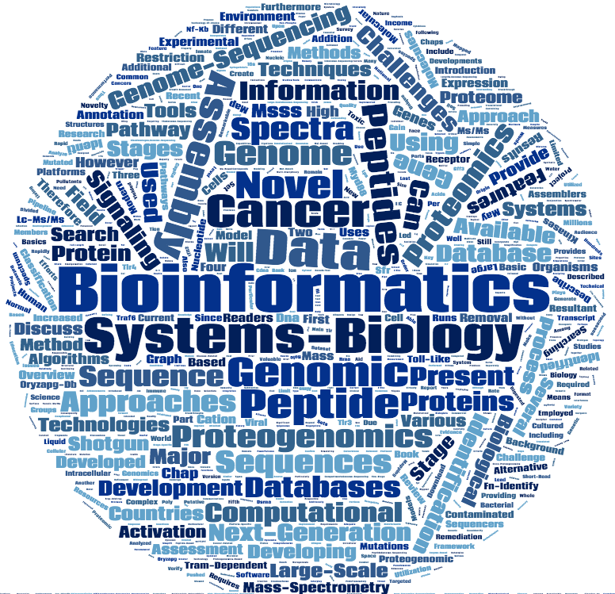

Mohamed Helmy, PhD
Postdoctoral Researcher, Bader Lab
The Donnelly Centre
University of Toronto
Contact Information
160 College Street, Room 630
The Donnelly Centre
University of Toronto
Toronto, Ontario
Canada, M5S 3E1
Map
Email: mohamed.attiashahata[AT]utoronto.ca
Publications
Google Scholar Profile
CONFERENCES AND ACADEMIC PRESENTATIONS
A. Oral Presentations
5- Helmy M., Providing Open Source Tools for Network Biology Community: 2 Years with GSoC. Google Summer of Code Mentors Summit (GSoC'16). CA, USA 2016.
4- Helmy M., Assessment of the somatic mutations impact on cancer network dynamics using domain-based protein interaction networks. 2nd Symposium on Complex Biodynamics & Networks (cBio2015). Tsuruoka, Japan 2015.
3 - Helmy M., Tomita M., Tsuchiya M., Selvarajoo K. AP-1 and NF-kB are key regulators of Toll-Like Receptor 3 signaling pathway: an in silico prediction. EJISST2008.Tokyo 2008.
2- Helmy M. Understanding the signaling dynamics of the innate immune system. 3rd E-Cell workshop. Tokyo 2007.
1- Selvarajoo K., Helmy M., Tomita M., Tsuchiya M. Inferring the mechanistic basis for the dynamic response of the MyD88-dependent and -independent pathways. 10th International Conference on Molecular Systems Biology 2008 (ICMSB'08). Philippines 2008.
B. Invited Talks
5- Helmy M. Network Topology and Dynamics in Cancer and Inflammatory Diseases (2015) Niigata University, Japan. Host: Professor Tabashi Yamamoto.
4- Helmy M. Systems Biology Approaches to Understand Signaling Pathways, Improve Genome Annotations and Identify Cancer Somatic Mutations (2012). The University of Toronto. Host: Professor Gary Bader.
3- Helmy M. Proteogenomics and Onco-Proteogenomics (2012). Kyoto University, Department of Molecular and cellular Bio-analysis. Host: Professor Yasushi Ishihama.
2- Helmy M. Proteogenomics: utilization of proteomics data in genome annotation process (2011). Al- Azhar University, Department of Biotechnology. Host: Professor Fawzy El-Fiky, Head of the department.
1- Helmy M. Genome annotation, the foundation of genetic and metabolic engineering (2009). Al-Azhar University, Department of Biotechnology. Host: Professor Fawzy El-Fiky, Head of the department.
C. Poster Presentations
17- Helmy M., Wagih O., Bader G., Cancer high-resolution domain-based protein interaction networks with integrated mutation impacts. The Modularity of Signalling Proteins and Networks. Austria 2016.
16- Helmy M., Bader G., DV-Impact: An online resource and data standard for reporting disease variants impact on domain-based protein interactions. The GLBIO/CCBC Great Lakes Bioinformatics and the Canadian Computational Biology Conference 2016. Toronto, Canada 2016.
15- Helmy M., Bader G., Predicting mutations impact in protein interaction networks in cancer. The International Congress of the Human Proteome organization (HUPO2015). Vancouver, Canada 2015.
14- Risk B. & Helmy M.,., Peppy 2.0: New Software Addressing the Sensitivity Problem in Proteogenomics. The International Congress of the Human Proteome organization (HUPO2015). Vancouver, Canada 2015.
13- Helmy M., Onco-ProteoGenomics: Onco-ProteoGenomics: a systems biology approach to identify cancer related somatic mutations. The 13th international conference on Systems Biology (ICSB2012), Toronto, ON, Canada 2012.
12- Helmy M., Onco-ProteoGenomics: alliance of proteomics, next-generation sequencing and comprehensive database search for identification of onco-peptides. 60th ASMS Conference on Mass Spectrometry and Allied Topics, Vancouver, BC, Canada 2012.
11- Helmy M., MSSS: Bioinformatics method facilitates searching large set of peptide spectra against large nucleotide databases for structural- and onco-proteogenomics. The Society for In Vitro Biology’s Annual Meeting (SIVB2011). North Carolina, USA 2011.
10- Helmy M., Tomita M., Ishihama Y. Onco-proteogenomics: A novel approach for identification of cancer-specific mutation combining proteomics and transcriptome deep sequencing. Beyond the Genome (BTG2010). Harvard Medical School, Boston, USA 2010.
9- Helmy M., Tomita M., Ishihama Y. Onco-proteogenomics: toward the identification of oncogenic peptides and proteins. The International Congress of the Human Proteome organization (HUPO2010). Sydney, Australia 2010.
8- RIBONUCLEASE H 2008, Tsuruoka, Japan. [Attendance]
7- Helmy M., Tomita M., Ishihama Y. PGFeval: Software tool and web server for evaluation and visualization of proteogenomic features. The 20th International Conference on Genome Informatics (GIW2009). Yokohama, Japan 2009.
6- Helmy M., Tomita M., Ishihama Y. MSRI: Novel proteogenomic approaches to maximize the utilization of MS/MS data for genome reannotation. The 32nd Annual Meeting of the Molecular Biology Society of Japan (MBSJ2009).Yokohama, Japan 2009.
5- Helmy M., Tomita M., Ishihama Y. Novel features for rice genome revealed using proteogenomic analysis. The 10th international conference on Systems Biology (ICSB2009). Stanford University, CA, USA 2009.
4- Hayashi K., Helmy M., Tomita M., Tsuchiya M., Selvarajoo K. Systems biology approach reveals novel TNF-alpha signaling crosstalk. The 9th international conference on Systems Biology (ICSB2008). Sweden 2008.
3- Helmy M., Tomita M., Tsuchiya M., Selvarajoo K. Dynamic simulation of Toll-like Receptor 3 signaling pathway. The 9th international conference on Systems Biology (ICSB2008). Sweden 2008.
2– Helmy M., Tomita M., Tsuchiya M., Selvarajoo K. Computational simulations suggest transcription factors AP-1 and NF-κB are key regulators of TLR3 signaling. Annual International Conference on Research in Computational Molecular Biology (RECOMB2008). Singapore 2008.
1- Hayashi K., Helmy M., Magdi H., Tomita M., Tsuchiya M., Selvarajoo K. In silico model predicts the existence of novel pathways in activating transcription factor AP-1 in TNF-α signaling. Genome Informatics Workshop (GIW). Singapore 2007.